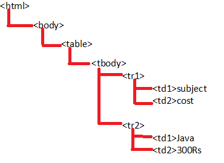
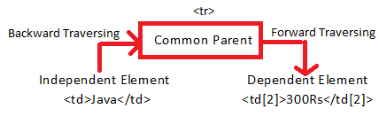
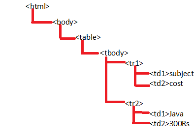

Selenium Webdriver uses locators to find the web elements on web page. The following are the list of the locators used by selenium.
1. Locating a Web Element by ID: The most efficient way to locate a web element on a web page is By ID. IDs are the fastest locator. Example 1:
<div class="tab-content"> <div class="tab-pane fade in active" id="a"> <div class="form-group">...</div> <div class="form-group">...</div> <div class="from-group"> <input type="submit" name="btnLogin" value="LOGIN" id="btnLogin" class="btn btn-info"></div> <div id="fpass" class="form-group">...</div> </div> <div clas="tab-pane-fade" id="b" >...</div> </div> </div> </div>
Selenium code:
driver.findElement(By.id("btnLogin"));
Note: If in source code with ID other locators are given, always use ID as it is fastest compared to other locators.
2. Locating a Web Element by Class Name: When there is no ID, locate the element by className.
<div class="tab-content"> <div class="tab-pane fade in active" id="a"> <div class="form-group">...</div> <div class="form-group">...</div> <div class="from-group"> <input type="submit" name="btnLogin" value="LOGIN" id="btnLogin" class="btn btn-info"></div> <div id="fpass" class="form-group">...</div> </div> <div clas="tab-pane-fade" id="b" >...</div> </div> </div> </div>
Selenium script to locate an element on the page by className
driver.findElement (By.className ("btn btn-info"));
3. Locating a Web Element by Name:
If there is no Id to use in HTML code, then next preferred way to locate the web element is name attribute.
<div class="tab-content"> <div class="tab-pane fade in active" id="a"> <div class="form-group">...</div> <div class="form-group">...</div> <div class="from-group"> <input type="submit" name="btnLogin" value="LOGIN" id="btnLogin" class="btn btn-info"></div> <div id="fpass" class="form-group">...</div> </div> <div clas="tab-pane-fade" id="b" >...</div> </div> </div> </div>
Selenium script to locate an element by name
driver.findElement(By.name("btnLogin"));
4. Locating an Web Element by LinkText:
If there is Links present on Web page it is very easy to locate them but make sure, there is only one unique link on the web page. If the specified locator is duplicate then it returns first matching web element.
<div clas="storycont1"> <div id="breadcrumbs_brdcrm" clas="gad_breadcrums"> <div id="breadcrum1" itemref="2" itemtype="http://data-vocabulary.org" font-wight:normal"> </div> <div id="breadcrum2" itemref="3" itemtype="child" itemtype="http://data-vocabulary.org" style="float:left;font-weight:normal"> </div> <a itemprop="url" href="/tags"> <span itemprop="title" style="font-weight:normal">Tags</span> </a> </div> <div id="breadcrum3" itemprop="child" itemtype="http:///data-vocabulary.org" style="float:left;font-weight:normal" > </div>
Selenium script for above html code is:
driver.findElement (By.linkText ("Tags")); 4. Locating an Web Element by Partial LinkText:
PartialLinkText also works in the same way as Link Text. To handle dynamic links (links which keep on changing) we can use Partial Link Text. User can provide partial link text to locate an web element.
<div class="LrBjie"> <div class="TK"> <div class="aim ain" /div> <div class="aim" /div> <div class="aim"> <div id=":i9" class="TO"> <div class="TN GLujEb" style="margin-left:0px"> <div class="aio UKr6le"> <span class="nU"> href="https://mail.google.com/male" Sent Male <span> </div> </div class="nL aif" /div> </div> </div>
Selenium script for above html code is:
driver.findElement (By.partilaLinkText ("Mail"));
PROS: It will select any link elements if we give partial text and useful when testing navigation
Note: Both Link Text and Partial Link Text locators can be used only on hyper link, other locators can be used on any web element on web page.
5. Locating an Web Element by TagName:
TagName can be used with Group elements like, Select and check-boxes / dropdowns. Example:
<tr> <td colspan="3"> <select class="blacktext" style="widht:180" name="webcategory"> <option value="" place select /option> <option value="Activex" activex /option> <option value="Adultcontent" adultcontent /option> <option value="Advertisements" advertisements /option>
Selenium script for above html code is:
Select select = new Select(driver.findElement(By.tagName("select")));
select.selectByVisibleText("Applets");
Or
Select.selectByValue("Applets");
6. Locating an Web Element By CSS Selector:
CSS Locator is another alternative of ID or Name locator or any other element locators in selenium webdriver software automation testing tool. Full form of CSS is "Cascading Style Sheets" and it define that how to display HTML elements on webpage of software web application
<head> <body id="www.wikipedia-org"> <div class="centeral-textlogo"> <div class="centeral-featured"> <div class"search-container" style="background-color: transparent;"> <input id="searchInput" type="search" accesskey="f" autofocus="autofocus" size="20" name="search" resulsts="10" style="background-color: rgb(255,225,255);"> <input id="searchLanguage" type="submit" name="go" value="-" style="background-color: rgb(255,225,255);"> <input type="didden name="go" value="Go"> </fieldset> </form> </div>
CSS locator Examples
i. Selenium CSS locator using Tag and any Attribute:
Below syntax will find "input" tag node which contains "type=search" attribute.
css=input[type=search]
Below syntax will find "input" tag node which contains "id=searchInput" attribute
css=input[id=searchInput]
Below syntax will find form containing "input" tag node which contains "id=searchInput" attribute. css=form input[id=searchInput]
Note: All above CSS path examples given above will locate Search text box
ii. Selenium CSS locator using Tag and ID attribute:
css=input#searchInput //Here, '#' sign is specially used for "id" attribute only. It will find "input" tag node which contains "id=searchInput" attribute. This syntax will locate Search text box
iii. Selenium CSS locator using Tag and class attribute:
css=input.formBtn // Here, '.' is specially used for "class" attribute only. It will find "input" tag node which contains "class=formBtn" attribute. This syntax will locate Search button (go).
iv. Selenium CSS locator using tag, class, and any attribute:
css=input.formBtn[name=go] //It will find "input" tag node which contains "class=formBtn" class and "name=go" attribute. This syntax will locate Search button (go).
v. Tag and multiple Attribute CSS locator:
css=input[type=search][name=search]//It will find "input" tag node which contains "type=search" attribute and "name=search" attribute. This syntax will locate Search text box
vi. CSS Locator using Sub-string matches(Start, end and containing text) in selenium:
css=input[id^='search'] //It will find input node which contains 'id' attribute starting with 'search' text.(Here, ^ describes the starting text).
css=input[id$='chInput'] //It will find input node which contains 'id' attribute starting with 'chInput' text. (Here, $ describes the ending text).
css=input[id*='archIn'] // It will find input node which contains 'id' attribute containing 'archIn' text. (Here, * describes the containing text)
Note : All three CSS path examples given above will locate Search text box on page of software web application
vii. CSS Element locator syntax using child Selectors:
css=div.search-container>form>fieldset>input[id=searchInput] // First it will find div tag with "class = search-container" and then it will follow remaining path to locate child node. This syntax will locate Search text box.
viii. CSS Element locator syntax using adjacent selectors
css=input + input // It will locate "input" node where another "input" node is present before it on page.(for search tect box).
css=input + select or css=input + input + select // It will locate "select" node, where "input" node is present before it on page(for language drop down).
ix. CSS Element locator using contains keyword
css=strong:contains("English") // It will looks for the element containing text "English" as a value on the page.
8. Locating an Web Element by XPATH : It is type of locator and it is an expression. XPATH is the path of the element in HTML tree.
Example:
<html> <body> <input> First Name <input> Last Name
Selenium script for above tree is:
{
WebDriver driver = new firefoxDriver();
driver.get("http://www.google.com/");
driver.findElement(By.tagName("input")).sendKeys("UserName")
String xpath="/html/body/input[2]";
driver.findElement(By.xpath(xpath)).sendKeys( "Password")
}
While writing XPATH expression we use forward slash '/'. The first '/' represents beginning of the html tree which is called as root. After every '/' we should specify tagName of the immediate child element only. In xpath we can use index by default. It starts with 1. The index changes only if there is any duplicate sibling (same tagName under same parent).
If we do not specify any index then it matches with all the elements but in selenium it performs action on first element.
In order to verify whether the XPATH expression is correct or not we use firefox. In order to install it in firefox
There are different types of XPATHS.
i. Absolute XPATH: Writing the complete XPATH of the element starting from the root is called as Absolute XPATH.
Example: /html/body/div/input[1] Here it reads both div
ii. Relative XPATH:The absolute XPATH will be very lengthy in order to reduce the length of XPATH expression we can use'//' instead of '/'. '//'represent any child(decendance)
Example1: //div[1]/input[1]
Example2: Derive all the links present on the webpage = //a
Example3: Derive all the images present on the webpage = //img
Note:</b> '/' is immediate child and '//' any child. It is the major difference between them. Absolute xpath is using single slash at the start of the xpath and relative is using double slash.
iii. XPATH by Attribute: In XPATH expression we can use property value and property name. Which is called as XPATH by Attribute.
Syntax: //html tag[@propertyName='propertyValue']
Note:
XPATH expression will find hidden elements also.
Do not use attribute if its value is empty (" ") or Boolean (true/false).
We won't go for XPATH if we have ID, Name, Class and Link.
iv. XPATH by Text Function: If attribute is duplicate or attribute is not present, in such cases we can identify the element using its text in order to do this we should use following syntax.
Syntax: //html tag[text()='textvalue']
v. XPATH by contains():If there is space before and after the property value or text value then XPATH will not identify the element. To handle this scenarios we use contains function of XPATH.
Syntax: //html tag[contains(text(),'textvalue')]
vi. Traversing in XPATH: In XPATH we can navigate from one node to another node which is called as Traversing. There are 2 types
a.Forward Traversing: Navigating from parent node to child node is called as Forward Traversing. In order to do Forward Traversing then specify forward slash followed by tagName of immediate child
Example:
<html>
<body>
<table id= "t1" border ="1">
<tbody>
<tr>
<td>subject</td>
<td>cost</td>
</tr>
<tr>
<td>Java</td>
<td>300Rs</td>
</tr>
</tbody>
</table>
</body>
</html>
Below is the HTML tree with Independent and Dependent element. 
XPATH navigating from table to subject,
//table[@id='t1']/tbody/tr[1]/td[1]
XPATH navigating from table to Java,
//table[@id='t1']/tbody/tr[2]/td[1]
a.Backward Traversing: Navigating from child node to its parent node is called as backward traversing. In order to do this we use forward slash followed by double dot.
Example: XPATH navigating from subject to table,
//td[text()='Subject']/../../..
XPATH navigating from java to table,
//td[text()=Java]/../../..
Note:In Backward Traversing we do not use index
vii. Independent dependent XPATH: If we cannot use any of the previously used XPATH such as XPATH by attribute, XPATH by text() etc. We can use this Independent dependent concept. Refer the above code

In order to use this concept we should follow below mentioned steps.
For the given requirement note down the independent element and dependent element. Independent element will be unique whereas dependent element will be duplicate or dynamic.
Example: Derive XPATH to identify cost of Java
Independent element is Java in above
Dependent element is cost
1.Create HTML tree which should contain independent element, common parent and dependent element. Steps to execute,
a.Inspect the independent element and note down its code
b.Right click on dependent element open source code, place the mouse pointer on source code of independent element and move the mouse pointer in the upward direction till both independent and dependent elements are highlighted. It will be the common parent adding to the tree.
c.Select common parent use arrow keys to navigate till the dependent element and add it to the HTML tree.
Below is the HTML tree with Independent and Dependent element.

XPATH for dependent element.
//td[text()='Java']
XPATH for common parent
XPATH for dependent element
//td[text()='Java']/../td[2]